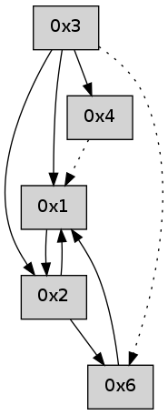

>> << IDX [start] -100 -25 -5 +0 +5 +25 +100 [385.008176088]
 Previous packets
----------------------------------------------------------------------
380.057139 beacon01(adaf) #0 coord=01,02,05,03,04,06 cycle=432.0ms assoc
-- color-indic=0 64 68 f9
380.067099 beacon02(adaf) #0 coord=01,02,05,03,04,06 cycle=432.0ms assoc 64 39 06
380.077100 beacon05(adaf) #0 coord=01,02,05,03,04,06 cycle=432.0ms assoc 64 9f 2c
380.087102 beacon03(adaf) #0 coord=01,02,05,03,04,06 cycle=432.0ms assoc 64 03 08
380.097101 beacon04(adaf) #0 coord=01,02,05,03,04,06 cycle=432.0ms assoc 64 a5 22
380.107101 beacon06(adaf) #0 coord=01,02,05,03,04,06 cycle=432.0ms assoc 64 d1 3e
380.123449 [Hello(1): seq=76 sym=6,2 sysInfo= stat=6:7,0,0,0/2:4,0,0,0]
----------------------------------------------------------------------
380.549248 beacon01(adaf) #0 coord=01,02,05,03,04,06 cycle=432.0ms assoc
-- color-indic=0 64 ac 96
380.559209 beacon02(adaf) #0 coord=01,02,05,03,04,06 cycle=432.0ms assoc 64 fd 69
380.569208 beacon05(adaf) #0 coord=01,02,05,03,04,06 cycle=432.0ms assoc 64 5b 43
380.579211 beacon03(adaf) #0 coord=01,02,05,03,04,06 cycle=432.0ms assoc 64 c7 67
380.589209 beacon04(adaf) #0 coord=01,02,05,03,04,06 cycle=432.0ms assoc 64 61 4d
380.599210 beacon06(adaf) #0 coord=01,02,05,03,04,06 cycle=432.0ms assoc 64 15 51
----------------------------------------------------------------------
381.041355 beacon01(adaf) #0 coord=01,02,05,03,04,06 cycle=432.0ms assoc
-- color-indic=0 64 e0 26
381.051315 beacon02(adaf) #0 coord=01,02,05,03,04,06 cycle=432.0ms assoc 64 b1 d9
381.061318 beacon05(adaf) #0 coord=01,02,05,03,04,06 cycle=432.0ms assoc 64 17 f3
381.071316 beacon03(adaf) #0 coord=01,02,05,03,04,06 cycle=432.0ms assoc 64 8b d7
381.081318 beacon04(adaf) #0 coord=01,02,05,03,04,06 cycle=432.0ms assoc 64 2d fd
381.091317 beacon06(adaf) #0 coord=01,02,05,03,04,06 cycle=432.0ms assoc 64 59 e1
381.102094 [Hello(1): seq=77 sym=6,2 sysInfo= stat=6:7,0,0,0/2:4,0,0,0]
381.106635 [Hello(4): seq=178 asym=1,2 sysInfo= stat=1:0,0,0,0/2:4,0,0,0]
----------------------------------------------------------------------
381.533462 beacon01(adaf) #0 coord=01,02,05,03,04,06 cycle=432.0ms assoc
-- color-indic=0 64 24 49
381.543423 beacon02(adaf) #0 coord=01,02,05,03,04,06 cycle=432.0ms assoc 64 75 b6
381.553423 beacon05(adaf) #0 coord=01,02,05,03,04,06 cycle=432.0ms assoc 64 d3 9c
381.563424 beacon03(adaf) #0 coord=01,02,05,03,04,06 cycle=432.0ms assoc 64 4f b8
381.573424 beacon04(adaf) #0 coord=01,02,05,03,04,06 cycle=432.0ms assoc 64 e9 92
381.583424 beacon06(adaf) #0 coord=01,02,05,03,04,06 cycle=432.0ms assoc 64 9d 8e
----------------------------------------------------------------------
382.025570 beacon01(adaf) #0 coord=01,02,05,03,04,06 cycle=432.0ms assoc
-- color-indic=0 64 69 4e
382.035531 beacon02(adaf) #0 coord=01,02,05,03,04,06 cycle=432.0ms assoc 64 38 b1
382.045532 beacon05(adaf) #0 coord=01,02,05,03,04,06 cycle=432.0ms assoc 64 9e 9b
382.055531 beacon03(adaf) #0 coord=01,02,05,03,04,06 cycle=432.0ms assoc 64 02 bf
382.065532 beacon04(adaf) #0 coord=01,02,05,03,04,06 cycle=432.0ms assoc 64 a4 95
382.075532 beacon06(adaf) #0 coord=01,02,05,03,04,06 cycle=432.0ms assoc 64 d0 89
382.097274 [Hello(1): seq=78 sym=6 sysInfo= stat=6:7,0,0,0]
----------------------------------------------------------------------
382.517677 beacon01(adaf) #0 coord=01,02,05,03,04,06 cycle=432.0ms assoc
-- color-indic=0 64 ad 21
382.527639 beacon02(adaf) #0 coord=01,02,05,03,04,06 cycle=432.0ms assoc 64 fc de
382.537638 beacon05(adaf) #0 coord=01,02,05,03,04,06 cycle=432.0ms assoc 64 5a f4
382.547638 beacon03(adaf) #0 coord=01,02,05,03,04,06 cycle=432.0ms assoc 64 c6 d0
382.557639 beacon04(adaf) #0 coord=01,02,05,03,04,06 cycle=432.0ms assoc 64 60 fa
382.567639 beacon06(adaf) #0 coord=01,02,05,03,04,06 cycle=432.0ms assoc 64 14 e6
----------------------------------------------------------------------
383.009785 beacon01(adaf) #0 coord=01,02,05,03,04,06 cycle=432.0ms assoc
-- color-indic=0 64 e1 91
383.019746 beacon02(adaf) #0 coord=01,02,05,03,04,06 cycle=432.0ms assoc 64 b0 6e
383.029748 beacon05(adaf) #0 coord=01,02,05,03,04,06 cycle=432.0ms assoc 64 16 44
383.039747 beacon03(adaf) #0 coord=01,02,05,03,04,06 cycle=432.0ms assoc 64 8a 60
383.049747 beacon04(adaf) #0 coord=01,02,05,03,04,06 cycle=432.0ms assoc 64 2c 4a
383.059747 beacon06(adaf) #0 coord=01,02,05,03,04,06 cycle=432.0ms assoc 64 58 56
383.070785 [Hello(1): seq=79 sysInfo= stat=]
383.075052 [Hello(4): seq=180 asym=1 sysInfo= stat=1:1,0,0,0]
----------------------------------------------------------------------
383.501892 beacon01(adaf) #0 coord=01,02,05,03,04,06 cycle=432.0ms assoc
-- color-indic=0 64 25 fe
383.511852 beacon02(adaf) #0 coord=01,02,05,03,04,06 cycle=432.0ms assoc 64 74 01
383.521853 beacon05(adaf) #0 coord=01,02,05,03,04,06 cycle=432.0ms assoc 64 d2 2b
383.531853 beacon03(adaf) #0 coord=01,02,05,03,04,06 cycle=432.0ms assoc 64 4e 0f
383.541854 beacon04(adaf) #0 coord=01,02,05,03,04,06 cycle=432.0ms assoc 64 e8 25
383.551854 beacon06(adaf) #0 coord=01,02,05,03,04,06 cycle=432.0ms assoc 64 9c 39
----------------------------------------------------------------------
383.994000 beacon01(adaf) #0 coord=01,02,05,03,04,06 cycle=432.0ms assoc
-- color-indic=0 64 7b 9f
384.003960 beacon02(adaf) #0 coord=01,02,05,03,04,06 cycle=432.0ms assoc 64 2a 60
384.013960 beacon05(adaf) #0 coord=01,02,05,03,04,06 cycle=432.0ms assoc 64 8c 4a
384.023962 beacon03(adaf) #0 coord=01,02,05,03,04,06 cycle=432.0ms assoc 64 10 6e
384.033963 beacon04(adaf) #0 coord=01,02,05,03,04,06 cycle=432.0ms assoc 64 b6 44
384.043962 beacon06(adaf) #0 coord=01,02,05,03,04,06 cycle=432.0ms assoc 64 c2 58
384.059657 [Hello(1): seq=80 sym=2 sysInfo= stat=2:0,0,0,0]
----------------------------------------------------------------------
384.486107 beacon01(adaf) #0 coord=01,02,05,03,04,06 cycle=432.0ms assoc
-- color-indic=0 64 bf f0
384.496068 beacon02(adaf) #0 coord=01,02,05,03,04,06 cycle=432.0ms assoc 64 ee 0f
384.506069 beacon05(adaf) #0 coord=01,02,05,03,04,06 cycle=432.0ms assoc 64 48 25
384.516069 beacon03(adaf) #0 coord=01,02,05,03,04,06 cycle=432.0ms assoc 64 d4 01
384.526068 beacon04(adaf) #0 coord=01,02,05,03,04,06 cycle=432.0ms assoc 64 72 2b
384.536069 beacon06(adaf) #0 coord=01,02,05,03,04,06 cycle=432.0ms assoc 64 06 37
----------------------------------------------------------------------
384.978215 beacon01(adaf) #0 coord=01,02,05,03,04,06 cycle=432.0ms assoc
-- color-indic=0 64 f3 40
384.988175 beacon02(adaf) #0 coord=01,02,05,03,04,06 cycle=432.0ms assoc 64 a2 bf
384.998177 beacon05(adaf) #0 coord=01,02,05,03,04,06 cycle=432.0ms assoc 64 04 95